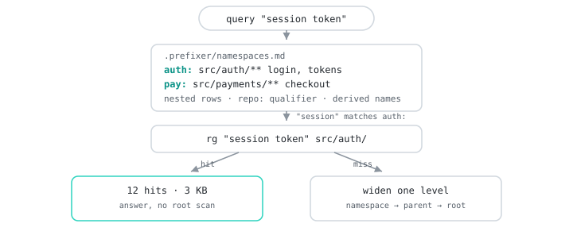
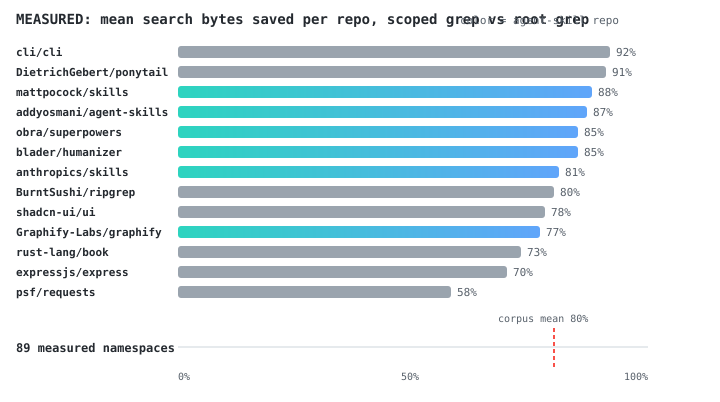

Your agent greps the whole repo. It doesn't have to.
AI coding agents that grep the whole tree pay for every irrelevant hit in tokens and tool calls. Prefixer gives the agent a small namespace map: short prefixes pointing at the parts of the repo that matter. Searches start scoped, widen on a miss, and land in the right files first.
The whole thing is Markdown and shell scripts; nothing runs as a
service. One SKILL.md, five reference playbooks, and a small
toolkit for scaffolding, linting, measuring, and evaluating. It works with
any agent that reads skills:
Devin, Claude Code, Codex, Cursor, and friends.

.prefixer/namespaces.md, rows like
auth: | src/auth/** | login, tokens, sessions, and searches
inside the matching namespace instead of the whole tree.repo: qualifier, so
payments:auth: and checkout-service:auth: stay
distinct across codebases, and rows nest for sub-teams
(payments:checkout:)..prefixer/metrics.jsonl. check_namespaces.sh
lints the map for dead scopes; eval_repo.sh produces the
bytes-saved number.scripts/visualize.py renders an
interactive HTML report: the map painted on your file tree, coverage per
namespace, and scoped-vs-root byte bars, in one file with no dependencies.
| repo | shape | namespaces | mean saved | range |
|---|---|---|---|---|
| obra/superpowers | skills-pack | 5 | 85% | 70-98% |
| mattpocock/skills | skills-pack | 9 | 91% | 55-99% |
| anthropics/skills | skills-pack | 11 | 72% | 14-99% |
| addyosmani/agent-skills | skills-pack | 8 | 85% | 66-98% |
| blader/humanizer | agent-skill | 2 | 85% | 84-87% |
| Graphify-Labs/graphify | knowledge-graph | 11 | 81% | 15-99% |
| DietrichGebert/ponytail | web-app | 8 | 92% | 77-99% |
| expressjs/express | web-framework | 8 | 80% | 12-97% |
| psf/requests | python-library | 7 | 69% | 2-99% |
| BurntSushi/ripgrep | rust-cli | 9 | 70% | 0-99% |
| shadcn-ui/ui | monorepo | 7 | 75% | 8-99% |
| rust-lang/book | docs-site | 7 | 66% | 7-99% |
| cli/cli | go-cli | 11 | 88% | 39-99% |
| pallets/flask | python-web | 11 | 75% | 38-97% |
| fastapi/fastapi | python-web | 10 | 87% | 12-99% |
| spf13/cobra | go-cli-lib | 3 | 81% | 58-95% |
| tokio-rs/tokio | rust-async | 11 | 86% | 45-99% |
| google/gson | java-library | 11 | 57% | 3-90% |
Corpus mean: 79% across 18 repos, 149
namespaces. Regenerated weekly from eval/repos.txt by CI;
full table and method in
eval/RESULTS.md.
$ bash scripts/eval_repo.sh ~/repos/superpowers checked 12 namespaces: 0 failures, 9 warnings tag root_hits root_bytes ns_hits ns_bytes pct assets: 44 5242 0 0 n/a docs: 177 34962 66 10682 69% hooks: 203 29348 7 470 98% scripts: 230 36229 19 2061 94% skills: 873 122699 135 23446 80% tests: 459 73555 117 11382 84% agents: 245 47554 0 0 n/a plugin: 679 88756 0 0 n/a claude: 178 36192 0 0 n/a codex: 196 30093 0 0 n/a cfg: 4 572 0 0 n/a boot: 313 41787 0 0 n/a mean pct_saved: 85% across 5 namespaces (7 namespaces n/a: 0 hits for their own name; probe them with real query patterns)
Scoped grep vs root grep, same query per namespace.
bash scripts/eval_repo.sh <repo> on your own repo gets
your numbers.
npx skills add Albisourous/prefixerOr auto-detect your agent: the installer checks for
.claude, .devin, and .agents markers
and installs there:
git clone https://github.com/Albisourous/prefixer /tmp/prefixer
bash /tmp/prefixer/scripts/install.shOr copy SKILL.md, references/, and
scripts/ into .agents/skills/prefixer/ (or
.devin/skills/prefixer/, ~/.config/devin/skills/ for
Devin) in your project. Full instructions in the
README.
npx skills add Albisourous/prefixer, run
bash scripts/init_namespaces.sh at the repo root, then read
.prefixer/namespaces.md before searching.
| Where the prefix goes | What it buys |
|---|---|
In front of a search (auth:, src/api/) |
Fewer tool calls, smaller results: fewer tokens spent exploring |
| In front of a doc at index time | Tighter embedding clusters: better Hit@k with zero fine-tuning |
| At the front of a prompt | Prompt-cache hits: cheaper input tokens, faster TTFT |
The index-time and cache-ordering playbooks ship in
references/. DESIGN.md collects the research base: Anthropic
Contextual Retrieval, index-time prefix injection (ACL 2026), Prompt Cache,
and RadixAttention.
Read it.
Most token waste in agent sessions comes from repo-wide searches dumping irrelevant hits into context. Prefixer gives the agent a namespace map so searches run inside the right directory first. On an 18-repo public corpus it measured a mean 79% fewer search-output bytes.
Because nothing tells it where things live.
.prefixer/namespaces.md is that missing file: a short table
of prefixes to scopes, derived from the codebase's own vocabulary, that
every session reads before searching.
Yes. It is a portable skill, plain markdown and shell. Install with
npx skills add Albisourous/prefixer, the Claude plugin
marketplace, or copy SKILL.md into
.agents/skills/prefixer/.
No. It is markdown files and shell scripts. Nothing runs in the background, nothing calls an API.
They solve different problems. Prefixer scopes lexical search before
it runs; embeddings rank results after retrieval. If you do run a RAG
index, the index-time prefix playbook in references/
tightens it.
Measured, not estimated: eval_repo.sh greps every
namespace at repo root and inside its scope. Across an 18-repo public
corpus, including the skill repos agents install most, it saved a
mean 79% of output bytes, per-repo means 53-92%. Your repo's number is
one command away.
Graphify builds a persistent, queryable knowledge graph of your codebase, the right tool for "how does X connect to Y" questions and architecture onboarding. Prefixer answers a smaller question (which directory should this search hit first) with a 12-line file, no install, no pipeline (81% of search bytes saved on graphify's own repo). Skills packs like superpowers or agent-skills bundle many skills for many workflows; prefixer is one skill doing one job. They stack. Full comparison and the patterns worth borrowing →